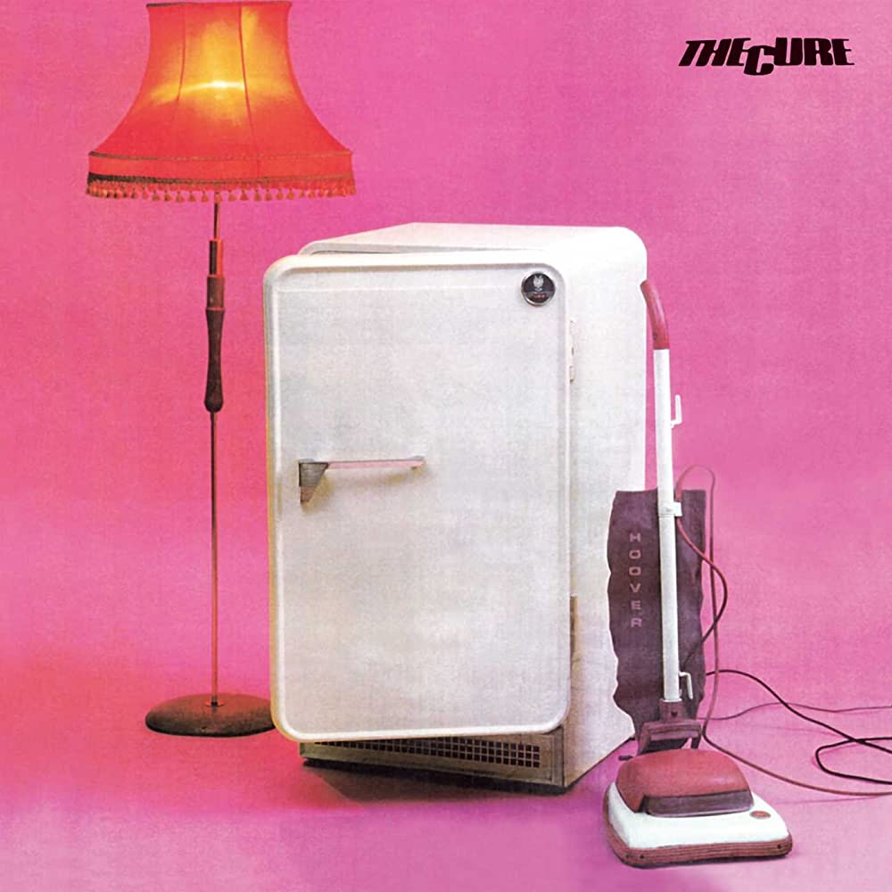
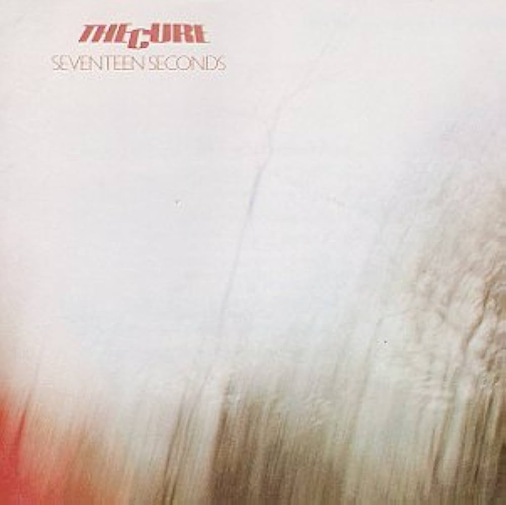
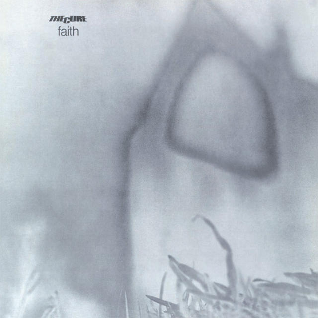
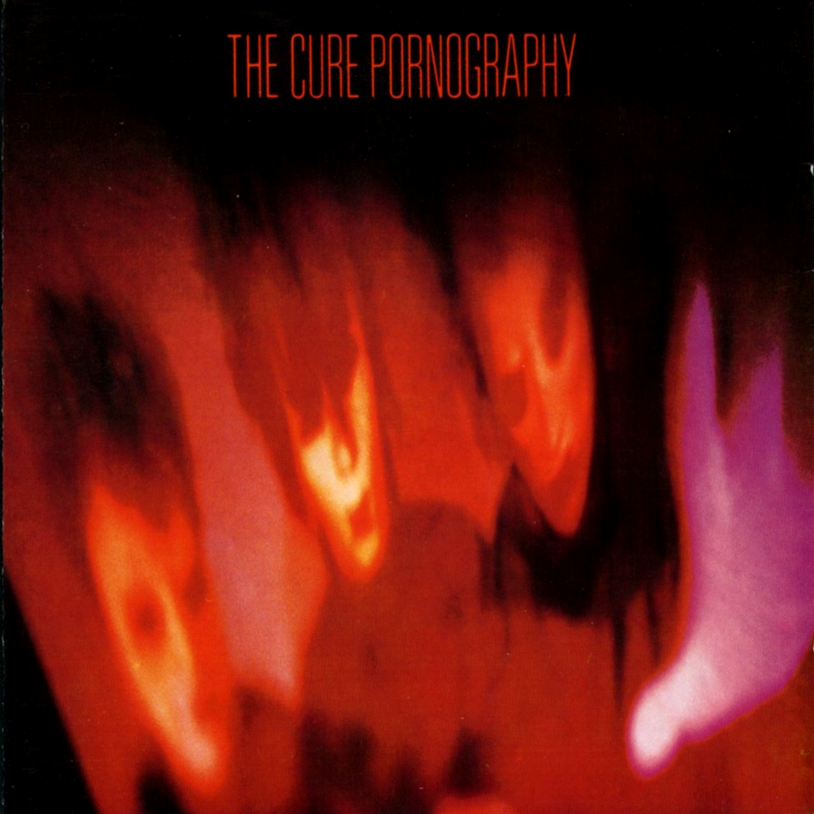
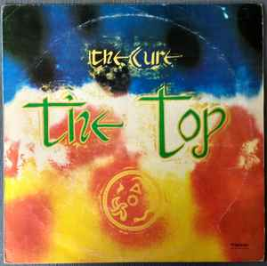
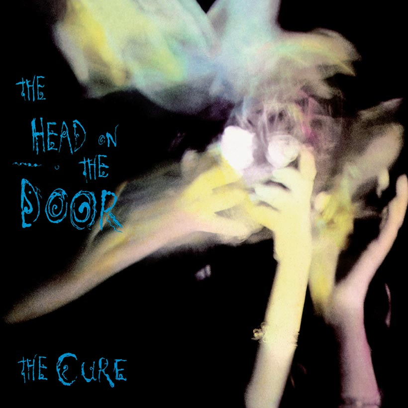
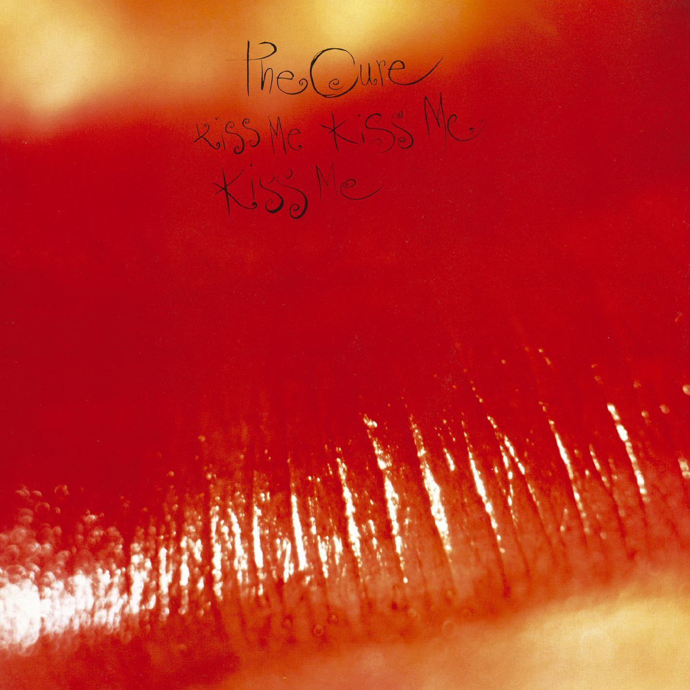
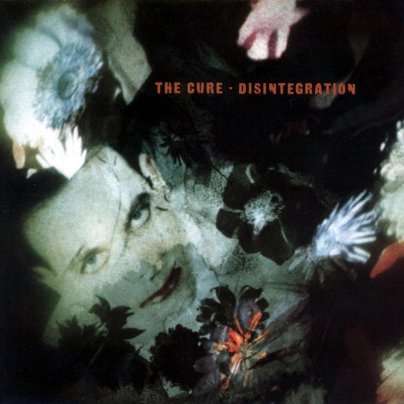
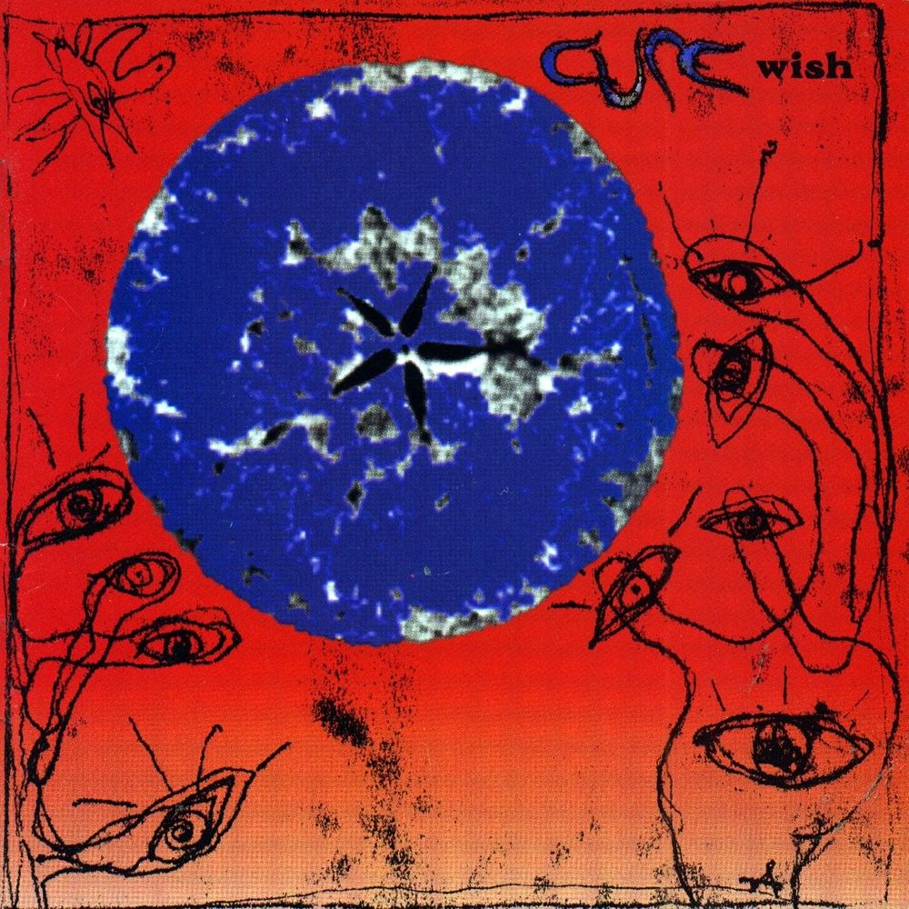

| The Cure Discography 1979-1992 | |||||
|---|---|---|---|---|---|
| Album | Year | Label | US Charts Top 200 | # of Singles | # of Music Videos |
| Three Imaginary Boys  | 1979 | Fiction | - | - | 1 |
| Seventeen Seconds  | 1980 | Fiction | 186 | 1 | 2 |
| Faith  | 1981 | Fiction | 193 | 1 | 3 |
| Pornograohy  | 1982 | Fiction, A&M | 133 | 1 | 1 |
| The Top  | 1984 | Fiction, Sire | 180 | 1 | 1 |
| The Head on the Door  | 1985 | Fiction, Elektra | 59 | 2 | 3 |
| Kiss Me, Kiss Me, Kiss Me  | 1987 | Fiction, Elektra | 35 | 4 | 4 |
| Disintegration  | 1989 | Fiction, Elektra | 12 | 4 | 4 |
| Wish  | 1992 | Fiction, Elektra | 2 | 3 | 3 |